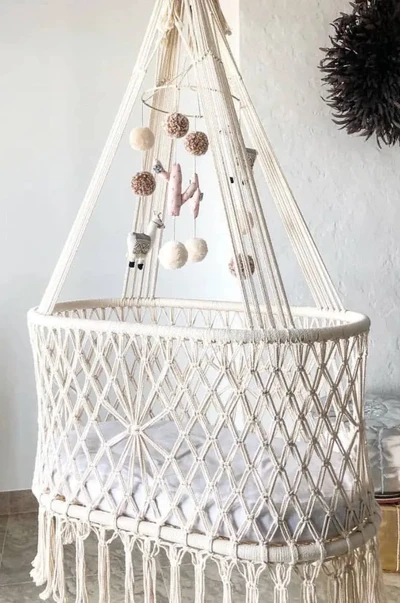
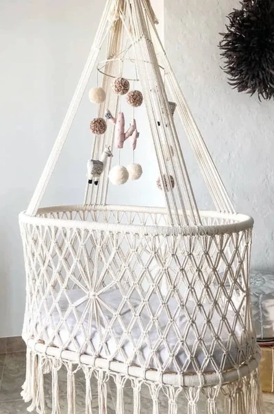

En nuestra tienda de macramé online encontrarás un amplio catálogo de productos artesanales. Adquiere nuestros artículos artesanales y disfruta de todos los beneficios del macramé:
- Autenticidad: Cada pieza de macramé es única y hecha a mano por expertos artesanos.
- Versatilidad: El macramé se adapta a cualquier estilo decorativo.
- Durabilidad: Las piezas de macramé son resistentes y duraderas, lo que las convierte en una excelente inversión a largo plazo para tus espacios.
- Sostenibilidad: Al ser elaboradas con materiales naturales, los productos hechos de macramé son una opción eco-amigable para la decoración de interiores.
TIPOS DE PRODUCTOS EN MACRAMÉ
Nuestro catálogo incluye una gran variedad de productos en macramé para adaptarse a tus necesidades:
- Tapices de pared
- Lámparas de macramé
- Muebles artesanales
- Hamacas